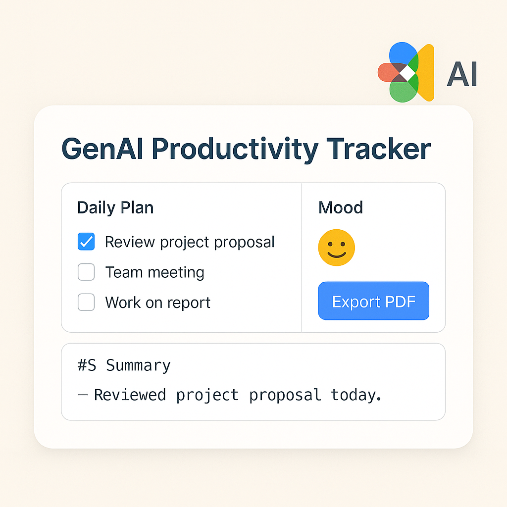
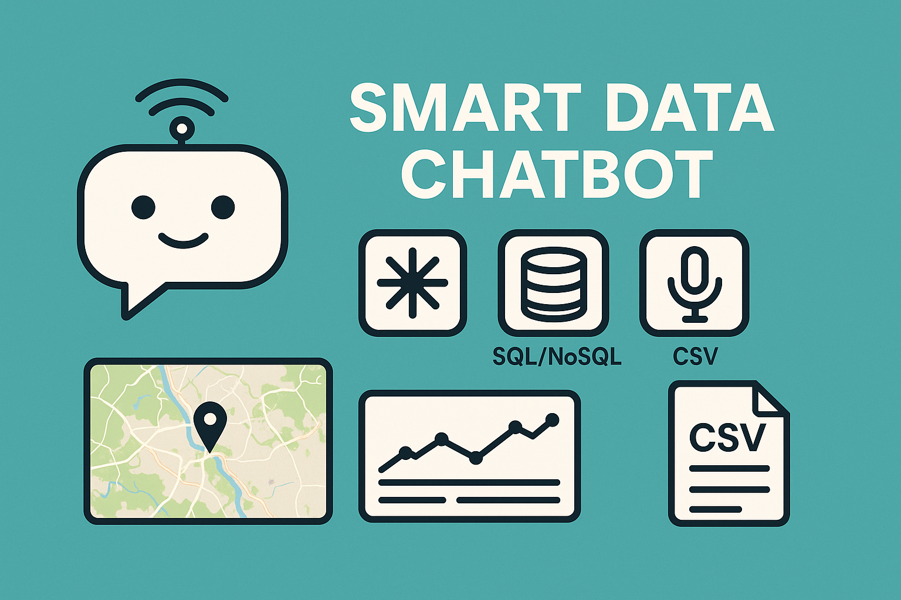
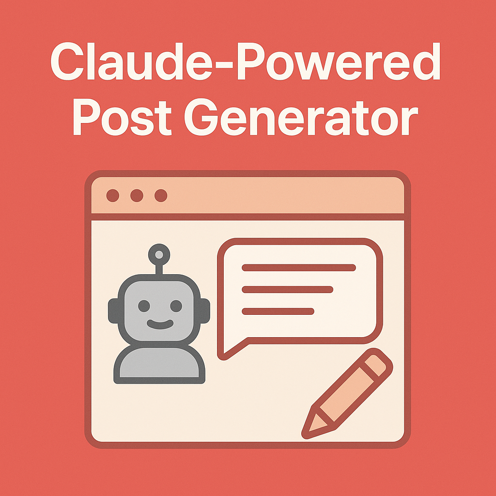
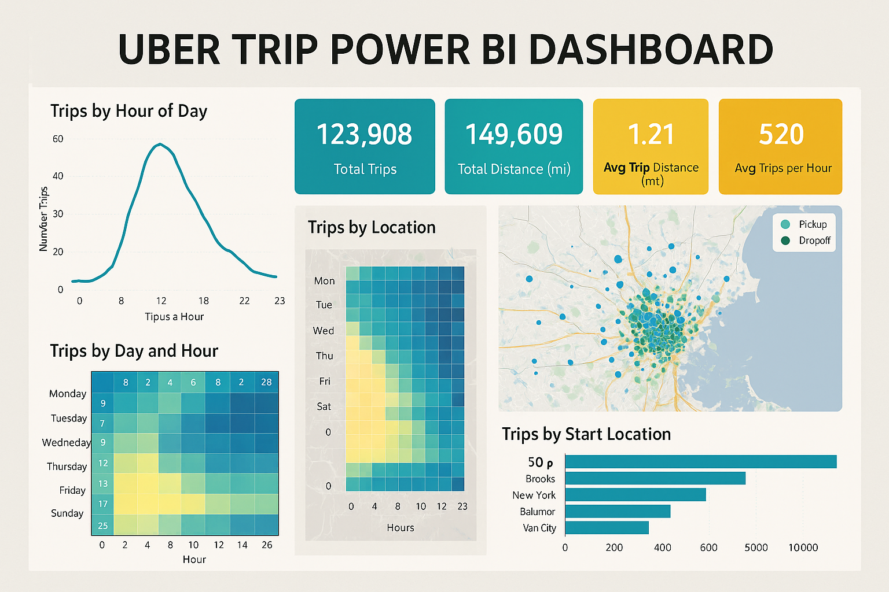
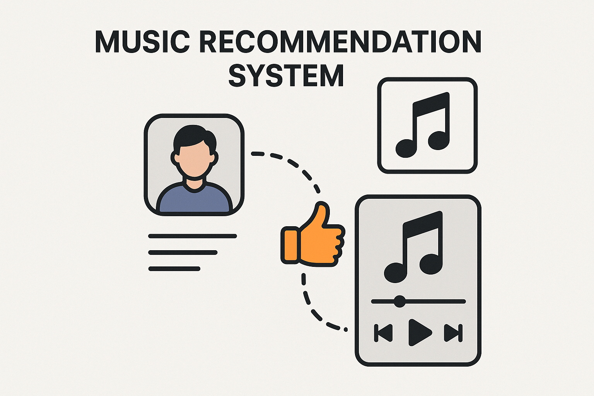
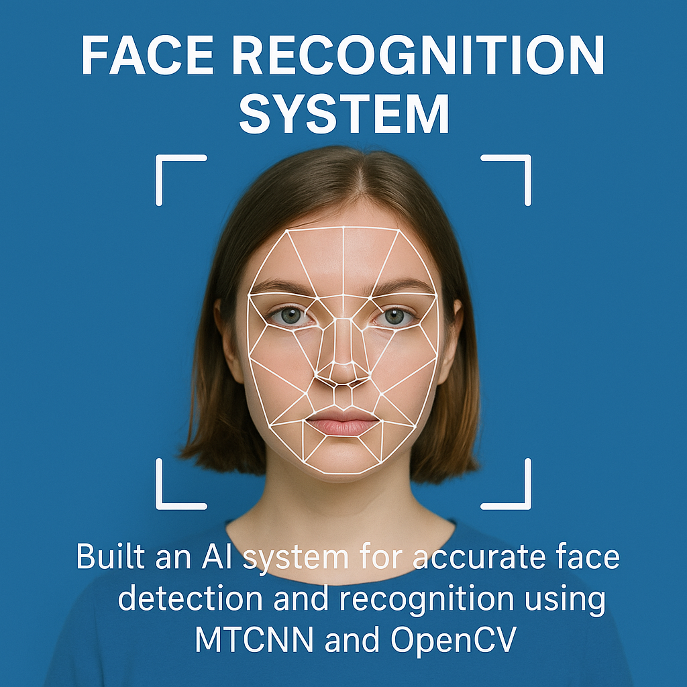
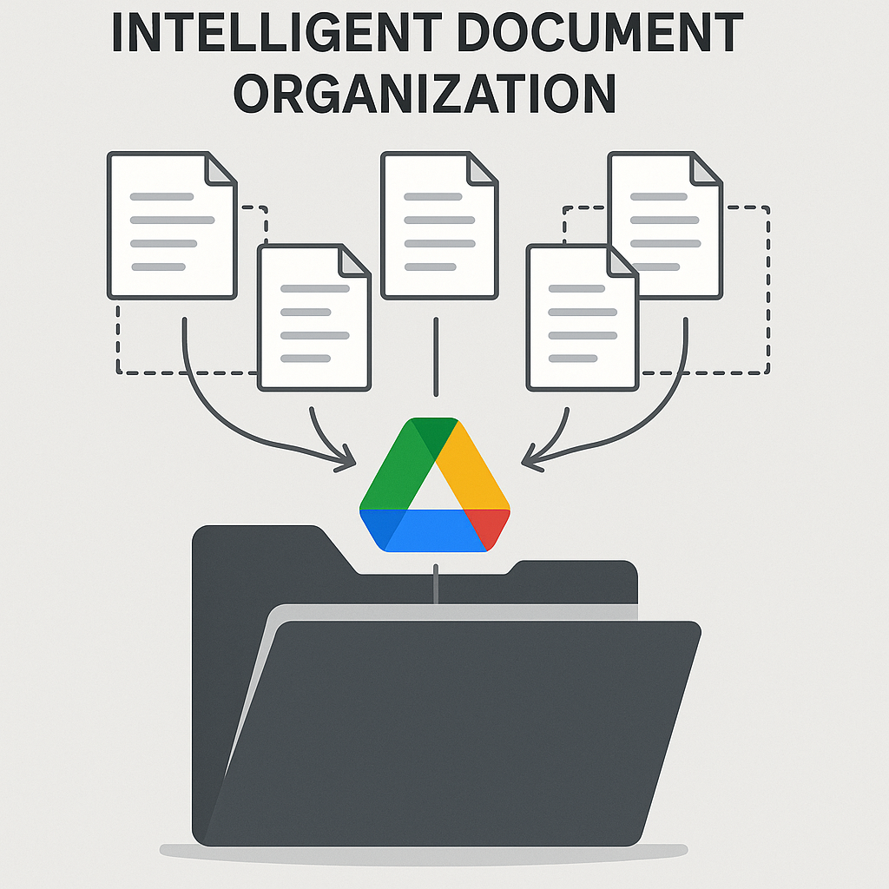
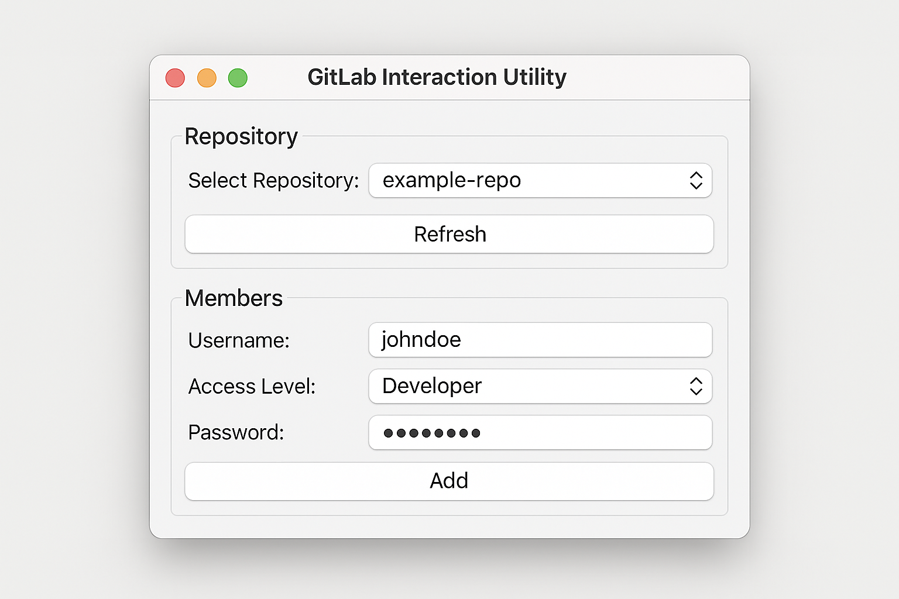
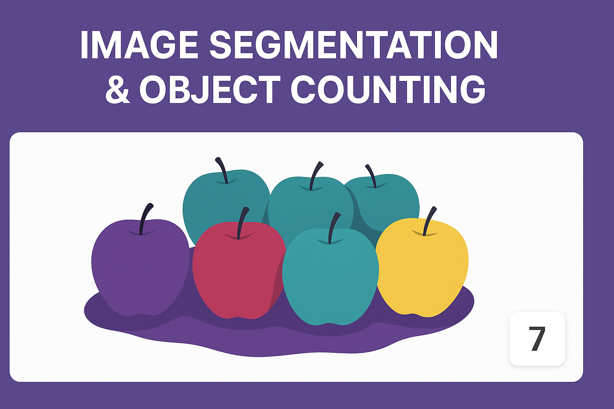

GenAI Productivity Tracker

Description: Streamlit app with Gemini 1.5 Flash/Pro for adaptive daily planning, mood tracking, PDF export, and markdown summaries.
Bridging AI research, software engineering, and user-centered design. Master’s student in Data Science with a passion for real-world impact and creative solutions.
Hello! I’m Krisha Goti, a Master’s student in Applied Data Science at the University of Southern California (Class of 2026). With a BTech (Hons.) in Computer Engineering and a Minor in Data Science from NMIMS, I specialize in creating AI-powered systems that bridge technical depth with human impact.
My work spans full-stack development, machine learning, generative AI, and cloud systems. From designing intelligent productivity tools and building research platforms to visualizing time-series biomechanics data and leading drug repurposing bootcamps for high school students. I thrive at the intersection of data, design, and purpose.
Beyond the world of models and code, I find inspiration in a wide spectrum of interests from mentoring students in data science to designing intuitive user experiences, from painting vivid landscapes to structuring clean, scalable systems. I believe in being a versatile problem solver: one who sees patterns, tells stories with data, and builds tools that people can actually use.
My journey is guided by a blend of technical expertise, creative thinking, research rigor, and community impact. Whether I’m crafting a chatbot, simplifying cloud workflows, or helping others unlock the power of AI, I bring logic, empathy, and imagination into everything I build.
As I grow deeper into the world of data and AI, I’m eager to explore new challenges, collaborate with inspiring minds, and continue making a difference through technology. Welcome to my portfolio — a reflection of curiosity, initiative, and impact-driven engineering.
A collection of my recent technical works. Click on the project names to explore more details.

Description: Streamlit app with Gemini 1.5 Flash/Pro for adaptive daily planning, mood tracking, PDF export, and markdown summaries.

Description: Multimodal query engine using LangChain + Gemini over SQL/NoSQL with voice support, Folium map, and CSV export.

Description: Flask-based tool that auto-generates social media posts with tone control and platform-specific formatting.

Description: Interactive Power BI report on 100K+ Uber rides revealing demand patterns and route efficiency.

Description: Developed a machine learning-based recommendation engine to suggest music based on user preferences.

Description: Built an AI system for accurate face detection and recognition using MTCNN and OpenCV.

Description: Built an intelligent document management system to categorize and organize files on Google Drive based on content similarity.

Description: Designed a GUI tool for managing GitLab repositories and team permissions with enhanced security features.
Description: Developed a translation and text-to-speech model using Google Cloud APIs, providing real-time translations with speech output.

Description: Created a system to count objects in images using segmentation techniques, optimizing the process for large datasets.
From academic research to industry innovation, here's a snapshot of my journey combining data science, software engineering, and mentoring.
University of Southern California | May 2025 - Present
Led development of StudentOfAI platform with Flask, React, and AWS; improved student research engagement by 20%.
USC (Prof. Susan Sigward) | May 2025 - Present
Streamlined clinical reporting via automated Python pipelines for biomechanics data.
USC School of Pharmacy | May - Aug 2025
Mentored 10 students on AI drug discovery with RDKit, ADMET filtering, and ML model training.
Drishti Emergency Services | May - Sep 2023
Built real-time AWS robot monitoring & multilingual TTS system using Google Cloud APIs.
Rinira Technologies | Dec 2021 - Apr 2022
Launched chatbot with React/Firebase and improved IoT Wi-Fi onboarding and UI/UX flows.
Python, C, C++, R
Pandas, NumPy, Matplotlib, Seaborn, TensorFlow, PyTorch, scikit-learn
HTML, CSS, JavaScript, Angular, Flask, React
AWS, Google Cloud, Azure
SQL, NoSQL, MongoDB, Firebase
Gemini, Claude, LangChain, Google Cloud APIs, GitLab API
Git, Visual Studio, Power BI, StarUML
I have completed several industry-recognized certifications to enhance my skills in data science and UX design:
Provider: Google
Developed foundational skills in user experience design, including wireframing, prototyping, and user research methodologies.
Provider: IBM
Gained hands-on experience in data analysis, machine learning, and data visualization techniques using Python and SQL.
Provider: University of Washington
Explored key concepts of machine learning, including supervised and unsupervised learning, model evaluation, and real-world applications.
Provider: IBM
Acquired a solid understanding of data science tools and techniques, including data wrangling, analysis, and model building.
Provider: IBM
Applied data science principles in real-world projects, utilizing machine learning algorithms and advanced statistical techniques.
Provider: IBM
Gained proficiency in Python programming and SQL queries for effective data management, manipulation, and analysis.